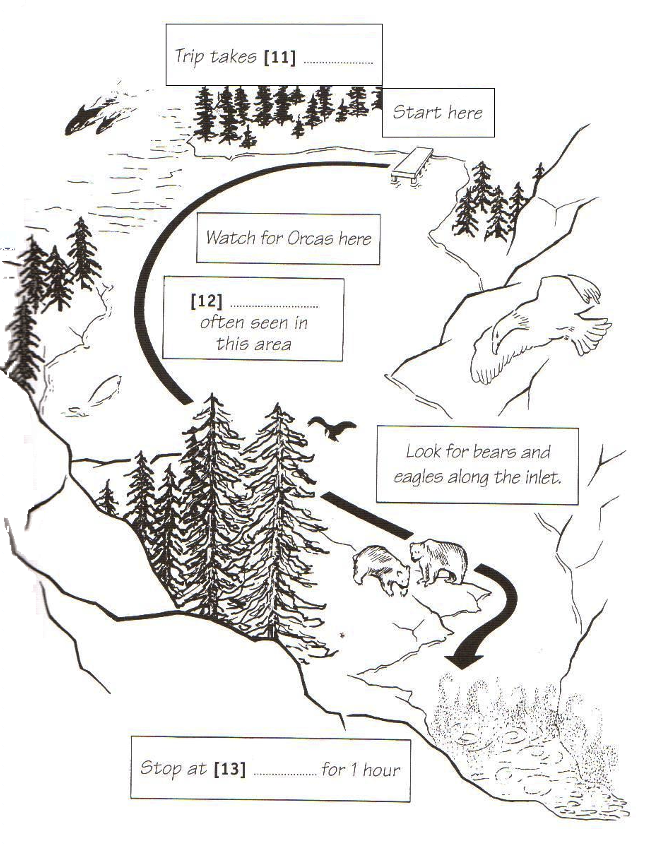

Complete the form using NO MORE THAN THREE WORDS for each answer.
| Model: | Celica |
| Year: | 1985(EXAMPLE) |
| Number of owners: | 1. |
| Condition: | overall good. 2. done last year |
| Reason for selling: | 3. |
| Asking price: | 4. |
| Appointment time: | 5. |
| Address: | 6. , Parkwood. |
| Contact name: | Elena |
Choose the correct letter A-C.
What happened to Sam’s car?
Why does Jan need a car now?
What does Sam recommend?
How are they travelling to Elena’s?
As you listen, fill in the details to complete the information on the map below.

Fill in the chart using NO MORE THAN THREE WORDS AND/OR A NUMBER.
| Whale Identification Chart | |||
|---|---|---|---|
| Colour | Size | General Characteristics | |
| Dolphins | grey | 1-2 metres | 14. |
| Orcas/ Killer Whales | 15. | 7 - 8 metres | • fierce hunters • eats fish, seals, other whales |
| Grey Whales | grey | 16. | • migratory • solitary • filter feeders, eat shrimp |
Fill in the chart using NO MORE THAN THREE WORDS AND/OR A NUMBER.
Advice for Participants on Whale Watching Excursions
• For a smooth ride, sit 17 of the boat.Fill in the summary below with NO MORE THAN TWO WORDS OR A NUMBER for each space.
Complete the summary. Write NO MORE THAN THREE WORDS AND/OR A NUMBERfor each space
Choose the correct letter A-C.
What was Sarah Price’s worst experience during the trip?
In which of the following areas does Ray expect to have most difficulty?
Write NO MORE THAN TWO WORDS for each answer.
Choose the correct letter A-C.
What does QWERTY stand for?
The first commercial typewriter was developed in…
The purpose of the QWERTY keyboard layout was…
Complete the summary below with NO MORE THAN THREE WORDS AND/OR A NUMBER for each answer..
Choose the correct letter A-C..
Which of these was the main reason why the Dvorak keyboard was never adopted?